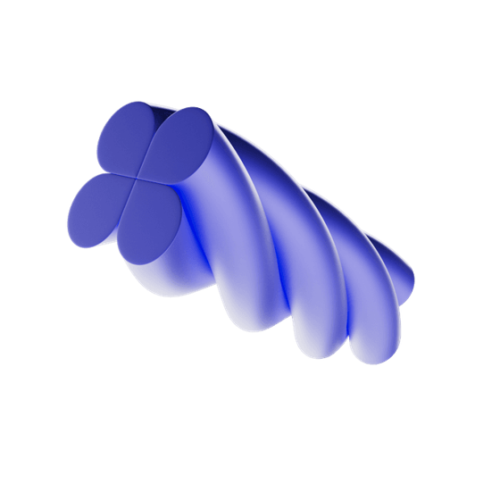
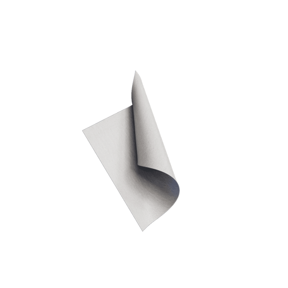
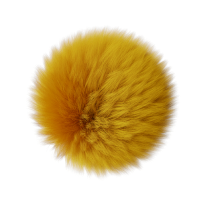
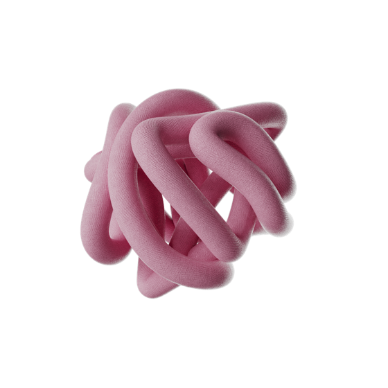

15nov
Universiteit van Vlaanderen · Radio 1 · Pelckmans
De Vooruitblik 2027
23 proffen over wat ons te wachten staat in 2027. Geen glazen bol, wel wetenschap die uitlegt wat eraan komt.
Geen voorspellingen. Wel context, inzichten en kennis om 2027 beter te begrijpen.
Hoe verandert ChatGPT ons denken? Zijn e-steps na de nieuwe verkeersregels echt veiliger? Kunnen we ziektes sneller opsporen via je stoelgang? Van ruimtevaart tot relaties, van gezondheid tot mobiliteit: drieëntwintig vragen, drieëntwintig wetenschappers.
Elk hoofdstuk is een toegankelijk essay van een professor. In de videopodcast schuift telkens een tweede expert aan die het onderwerp vanuit een andere hoek bekijkt. Samen helpen ze je begrijpen wat er in 2027 op je afkomt.
De vragen
Elk hoofdstuk begint met één concrete vraag. Klik door voor de professoren erachter.
Alle 23 →
Langer en gezonder leven in Limburg?
Waarom komen Nobelprijswinnaars in oktober graag naar Brussel?
Eindelijk verkeersregels voor e-steps, maar toch niet veiliger?

Hoe gewoon mag onze toekomstige koningin Elisabeth zijn?

Komt er in 2027 nog drinkbaar water uit de kraan?

Wordt een botox-afspraak dit jaar even normaal als een tandartscontrole?
Vier manieren om mee te kijken
Het boek
Drieëntwintig essays van drieëntwintig academici. Verschijnt op 15 november.
→3/wkVideopodcast
Twee professoren per vraag. Vanaf begin november elke week drie afleveringen.
→12uRadio 1
Jacotte Brokken blikt twee weken lang vooruit, elke weekdag in de kerstvakantie.
→LiveEvenementen
Stel je vraag rechtstreeks aan de professoren, op Boektopia en in het voorjaar.
Wanneer
- 1 november
Eerste videopodcast
Aflevering 1 verschijnt op zondag 1 november. Daarna komen er elke week ongeveer drie nieuwe bij, op VRT MAX, YouTube, Spotify en onze socials, tot en met 31 december.
- 15 november
Het boek verschijnt op Boektopia
Dag van de Wetenschap. Drie professoren gaan in gesprek in de Red Room van Antwerp Expo, tussen 12u en 12u45. Daarna is er een signeersessie.
- 21 dec – 1 jan
Radio 1-programma
Elke weekdag van 12 tot 13 uur, met Jacotte Brokken.
- Voorjaar 2027
Panelgesprekken in Vlaanderen
Vijf locaties, telkens vier academici in gesprek met het publiek. Data en locaties volgen.
Samen gemaakt
De Vooruitblik is een gezamenlijk project van universiteiten, uitgever, omroep en overheid.
Alle partners →
